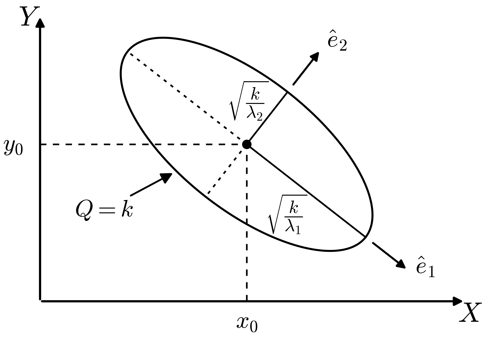

5.1. One- and two-dimensional PDFs#
[Note: If there are questions in this section you can’t answer right away, come back to them after playing with 📥 Demo: Exploring PDFs.]
To a Bayesian, everything is a PDF#
Physicists are used to dealing with PDFs as normalized wave functions squared. For a one-dimensional particle, the probability density at \(x\) is
The probability of finding \(x\) in some interval \(a \leq x \leq b\) is found by integration:
Just as with “Lagrangian” vs. “Lagrangian density”, physicists are not always careful when saying probability vs. probability density.
Physicists are also used to multidimensional normalized PDFs as wave functions squared, e.g. probability density for particle 1 at \(x_1\) and particle 2 at \(x_2\):
(Note that you will find alternative notation in the physics and statistics literature for generic PDFs: \(p(\textbf{x}) = P(\textbf{x}) = \textrm{pr}(\textbf{x}) = \textrm{prob}(\textbf{x}) = \ldots\) )
Some other vocabulary and definitions to remember
\(p(x_1,x_2)\) is the joint probability density of \(x_1\) and \(x_2\).
The marginal probability density of \(x_1\) is: \(p(x_1) = \int\! p(x_1,x_2)\,dx_2\). In quantum mechanics, this corresponds to the probability to find particle 1 at \(x_1\) and particle 2 anywhere; that is, \(\int\! |\Psi(x_1,x_2)|^2 dx_2\) (integrated over the full domain of \(x_2\), e.g., 0 to \(\infty\)).
“Marginalizing” = “integrating out” (eliminates from the posterior the “nuisance parameters” whose value you don’t care about, at least not at that moment).
In Bayesian statistics there are PDFs (or PMFs if discrete) for experimental and theoretical uncertainties, fit parameters, hyperparameters (what are those?), events (“Will it rain tomorrow?”), etc. Even if \(x\) has the definite value \(x_0\), we can use the PDF \(p(x) = \delta(x-x_0)\).
Characteristics of PDFs
What are the characteristics (e.g., symmetry, heavy tails, …) of different PDFs: normal, beta, student t, \(\chi^2\), \(\ldots\)
Answer
Check these yourself! Note that the answers will often depend on the parameter values for the distribution. A Student t distribution may have “heavy tails” (meaning more probability in the tails than a Gaussian would have) for some parameters but for others it approaches a normal distribution (so by definition no heavy tails).
Sampling
What does sampling mean?
Answer
To sample a given distribution is to draw values with probabilities given by the distribution. In Bayesian inference one is most often sampling a posterior distribution.
Verifying sampling
How do you know if a distribution is correctly sampled?
Answer
One way is to look at the (normalized)histogram. If correctly sampled, this should approximate the distribution and the approximation should improve with more samples.
2D PDF with a quadratic approximation#
Consider a two-dimensional log likelihood \(L(X,Y)\). We’ll analyze it in a quadratic approximation. First, find the mode \(X_0\), \(Y_0\) (best estimate) by differentiating
To check reliability, Taylor expand around \(L(X_0,Y_0)\):
It makes sense to do this in (symmetric) matrix notation:
{kind=link}

So in a quadratic approximation, the contour \(Q=k\) for some \(k\) is an ellipse centered at \(X_0, Y_0\) (as in the figure). The orientation and eccentricity are determined by \(A\), \(B\), and \(C\). The principal axes are found from the eigenvectors of the Hessian matrix \(\begin{pmatrix} A & C \\ C & B \end{pmatrix}\):
If the major and minor axes of the ellipse are aligned with the \(x\)-axis and \(y\)-axis (so \(C=0\)), the analysis is simple: the eigenvalues are \(A\) and \(B\) and the error-bars for \(X_0\) and \(Y_0\) will be inversely proportional to the modulus of their square roots. What if the ellipse is skewed? See Sivia section 3.3 [SS06] for a thorough treatment.
Compare Gaussian noise sampling to lighthouse analysis#
Here we observe that Gaussian noise sampling is carried out just like the radioactive lighthouse analysis from exercise notebook 📥 Radioactive lighthouse problem (which we assume you have worked through). Jump to the Bayesian approach in the exercise notebook 📥 Parameter estimation example: Gaussian noise and averages II. The goal is to sample a posterior \(p(\pars|D,I)\)
where \(D\) on the left are the \(x\) points and \(D=X\) on the right are the \(\{x_k\}\) where scintillation flashes are detected.
What do we need? From Bayes’ theorem, we need
You are generalizing the functions for log PDFs and the plotting of posteriors that are in 📥 Radioactive lighthouse problem. Note the functions for log-prior and log-likelihood in 📥 Parameter estimation example: Gaussian noise and averages II. Here \(\pars = [\mu,\sigma]\) is a vector of parameters; cf. \(\pars = [x_0,y_0]\).
Let’s step through the essential set up for emcee.
It is best to create an environment that will include
emceeandcorner.Hint
Nothing in the
emceesampling part needs to change!Basically we are doing 50 random walks in parallel to explore the posterior. Where the walkers end up will define our samples of \(\mu,\sigma\) \(\Longrightarrow\) the histogram is an approximation to the (unnormalized) joint posterior.
Plotting is also the same, once you change labels and
mu_true,sigma_truetox0_true,y0_true. (And skip themaxlikepart.)
Maximum likelihood here is the frequentist estimate \(\longrightarrow\) this is an optimization problem. And you can read off marginalized estimates for \(\mu\) and \(\sigma\).
Question
Are \(\mu\) and \(\sigma\) correlated or uncorrelated?
Answer
They are uncorrelated because the contour ellipses in the joint posterior have their major and minor axes parallel to the \(\mu\) and \(\sigma\) axes. Note that the fact that they look like circles is just an accident of the ranges chosen for the axes; if you changed the \(\sigma\) axis range by a factor of two, the circle would become flattened.
Bottom line: the two analyses are completely analogous.